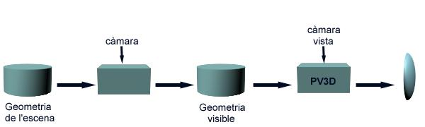

Parteixen de la geometria de l'escena (usualment cares planes) i, d'acord amb la posició de l'observador, calculen la geometria visible sobre el model de l'aplicació (espai aplicació o objecte). Posteriorment visualitzen aquesta geometria utilitzant el pipeline de visualització 3D. S'anomenen algorismes d'espai objecte perquè determinen la visibilitat comparant la posició relativa dels objectes de l'escena respecte a l'observador. En la figura mostrem el diagrama funcional d'un algorisme genèric i il·lustrem el seu funcionament amb un exemple concret. Es tracta d'una figura sensible, és a dir, cal prémer el cursor en els blocs per veure el seu efecte. S'analitza l'escena original, la geometria determinada visible i el resultat del seu processat dins el PV3D.
|  |
Exemples d'algorismes d'aquesta família són l'algorisme de Robert i el d'Appel. Tots ells són molt antics (dels 60,70) i s'utilitzaven quan els dispositius de sortida eren bàsicament vectorials i només es podien pintar segments rectes (filferros).
Per a determinar la complexitat d'aquesta família d'algorismes cal
considerar que donada la posició de l'observador Obs i una cara
concreta Ci, és necessari analitzar quines cares
Cj li són obstacles parcials o totals (Ci
parcialment o total no visible). Per tant, si per cada cara cal
analitzar (comparar) la posició relativa de la resta de cares respecte
d'ella i l'observador, la complexitat d'aquesta família d'algorismes
es O(N*N) on N es el nombre de cares de l'escena.